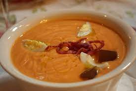

Salmorejo

Description
This is another famous Andalusian cold soup but different from gazpacho.
Ingredients
- Tomatoes
- Garlic
- Bread slice
- Olive oil
- Salt
- Boiled egg
- Jamón ibérico
Steps
- Boil an egg
- Wash tomatoes
- Throw tomatoes and garlic into a blender
- Blend
- Add bread and salt
- Blend again
- Add olive oil
- You guessed it: blend again
- Transfer to a bowl
- Transfer to the fridge
- Wait for about an hour
- Peel boiled egg
- Grate boiled egg
- Cut jamón ibérico into small bits
- Throw boiled egg and jamón ibérico over the salmorejo
- Ready!